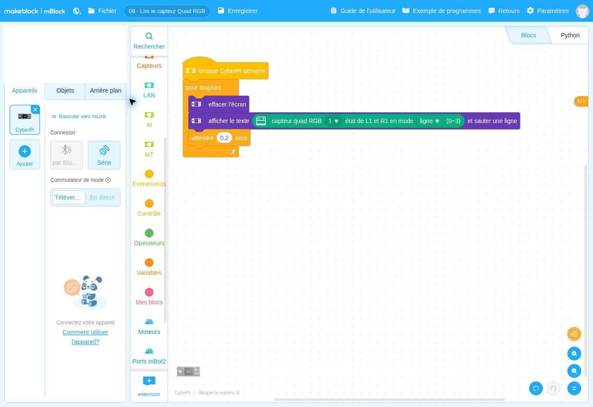

lorsque CyberPi démarreDépart
Ce que fait ce bloc : Bloc de départ : lancement dès que le programme démarre sur le robot.
Pourquoi il est là : Aucun appui nécessaire : on veut seulement lire le capteur.
Comment passer d’une piste au sol à une information utilisable ?
Avant de regarder le programme, écrivez en une phrase ce que vous pensez que le robot va faire. Lancement : Automatique : dès que le programme démarre sur le robot.
Se tromper ici est utile : c’est ce qui fait apprendre.
Voici le programme en français. Les lignes décalées vers la droite sont à l’intérieur d’une répétition ou d’un choix.
Quand le programme démarre :
je répète sans fin :
1. j’efface l’écran ;
2. j’écris le nombre (0 à 3) qui décrit ce que voient L1 et R1 ;
3. j’attends 0,2 seconde.
DépartContrôleAction du robotInformationÉcranMémoireCalcul
Ce que fait ce bloc : Bloc de départ : lancement dès que le programme démarre sur le robot.
Pourquoi il est là : Aucun appui nécessaire : on veut seulement lire le capteur.
Ce que fait ce bloc : Répète sans fin les blocs à l’intérieur.
Pourquoi il est là : Le capteur doit être lu sans cesse pour suivre vos déplacements.
Ce que fait ce bloc : Vide l’écran.
Pourquoi il est là : Pour n’afficher que la dernière valeur lue.
Ce que fait ce bloc : Écrit sur l’écran un nombre entre 0 et 3 qui résume ce que voient les deux sondes centrales L1 et R1.
Pourquoi il est là : C’est une « fenêtre » sur ce que voit le capteur : vous voyez enfin ce qu’il détecte, ce qui est invisible autrement.
Dans ce bloc, il y a :
Mot à connaître. Une « sonde » est un petit œil du capteur. L1 = sonde gauche du centre, R1 = sonde droite du centre.
Ce que fait ce bloc : Pause de 0,2 seconde.
Pourquoi il est là : Pour que le nombre reste lisible.
Autres solutions : page Besoin d’aide ?
Changez un seul élément, prévoyez le résultat, puis vérifiez avec le robot.
Cette partie est réservée au formateur. Saisissez le code formateur pour l’ouvrir.
Code incorrect.